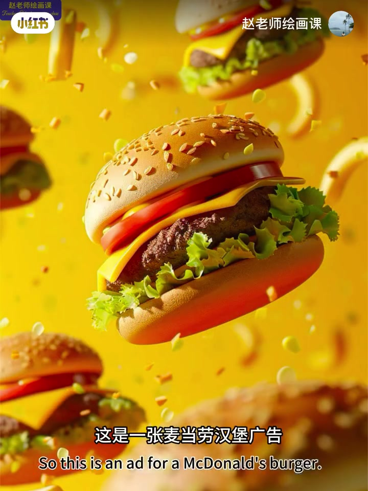
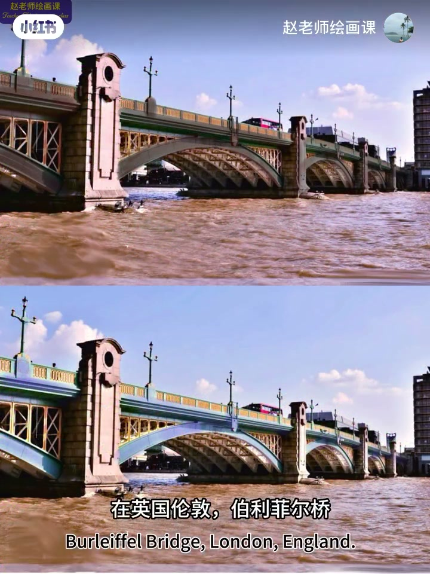
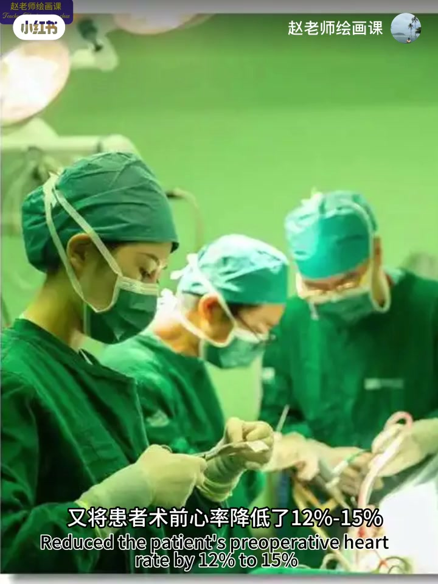
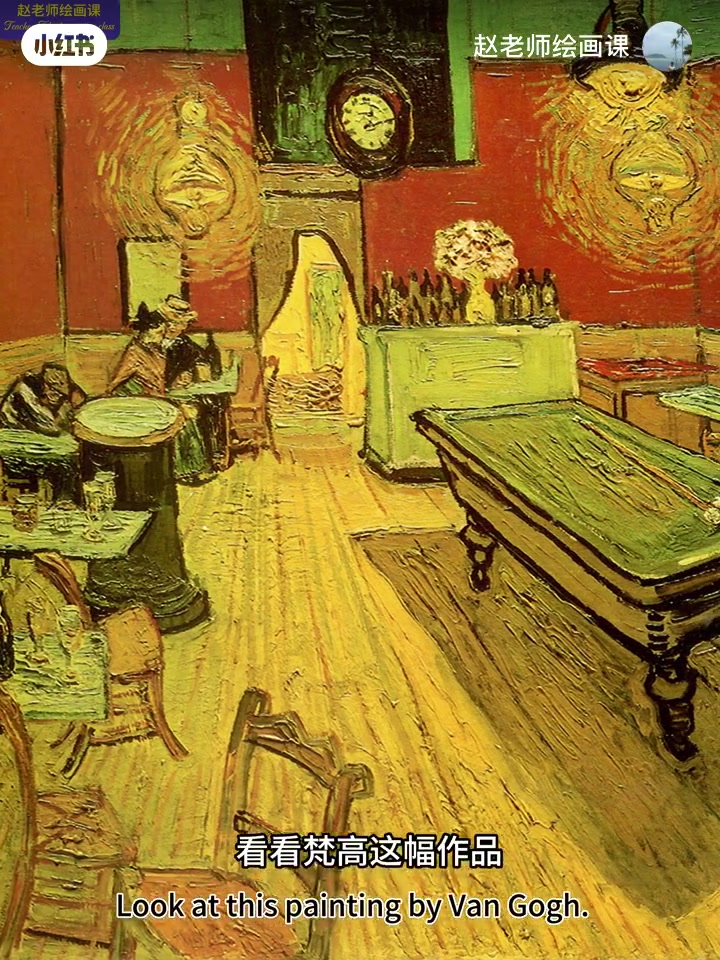
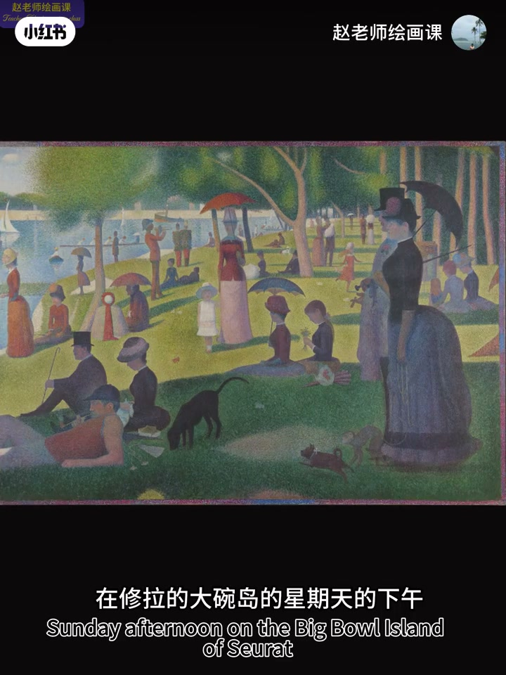

内容要点
色彩如何影响情绪？麦当劳红黄换蓝瞬间索然；电商爱红橙黄——红橙强烈刺激兴奋与食欲（视频引用点击率数据）。冷色镇静：桥改蓝、狱墙灰粉、手术室苹果绿等案例（数据为视频引用）。电影《英雄》黑红白绿深化悲剧。梵高夜间咖啡馆用血红与硫黄写可怕激情；杏花蓝枝让患者联想到呼吸节奏。修拉点彩既静谧又暗示疏离。倡议：把生活里的色彩感受记下来。
知识结构
红黄兴奋食欲；冷色少用于刺激消费。
冷色案例；《英雄》色调对比。
咖啡馆躁动；杏花疗愈共鸣。
点彩秩序与疏离；记录瞬间感受。
选色先问要激发还是镇静：刺激消费与冲突用暖强对比，疗愈与疏离用冷或理性技法；并把生活感受写成自己的色彩词典。
00:00-00:59广告色：兴奋与食欲
麦当劳汉堡广告红黄让人食欲大开，换成蓝色瞬间索然。购物平台 logo 与页面多选红橙黄而非冷色——背后是色彩心理学：红橙强烈视觉刺激引起兴奋，激发冲动消费，并以果实成熟联想刺激食欲。
视频称橙与红搭配可使食品广告点击率飙升51%（未独立核实）。并预告色彩系统课中的心理与作业。00:05。

00:59-01:47镇静色与电影《英雄》
伦敦布莱克弗里尔桥栏杆由黑改蓝后自杀率下降、日本监狱灰粉墙暴力锐减等，视频归因于冷色镇静（百分比未核实）。美国梅奥诊所手术室苹果绿墙，缓解医生长看血色的疲劳，并称降低患者术前心率。
电影《英雄》：黑象征秦权威严冷酷，战斗中红暗示暴力与牺牲，柔和白与绿的宁静与红的激烈对比，深化悲剧色彩。01:00／01:28。


01:47-02:50梵高：咖啡馆躁动与杏花疗愈
绘画里大师让色彩心理成为情绪迸发器。梵高：血红色墙、橘黄地板、柠檬黄灯发出刺眼橙光，球桌与屋顶的绿反向激活红橙躁动。他致提奥信中写：用血红与硫黄表现深夜咖啡馆里沸腾可怕的激情。
阿姆斯特丹梵高博物馆里，抑郁患者在杏花前驻足，称蓝色枝条在白底舒展让他想起呼吸时胸腔起伏——色彩与心理疗愈的共鸣。02:02／02:23。

02:50-03:56点彩技法情绪＋记录练习
除色彩本身，技法也能激发不同情绪。修拉《大碗岛的星期天下午》点彩纯色小点并置，视觉混合成静谧午後光影；理性色点排列既营造秩序感，又暗示工业化时代人际关系疏离。
倡议持续小练习：晚霞琥珀红、土黄沙漠、粉灰礼物、新鲜蓝莓……记下瞬间感受，日积月累会发现色彩与情感联系远比想象奇妙。02:56。

完整转录（104段）
以下文本由 Whisper medium 模型自动转录，可能存在少量识别误差，已尽可能修正。
色彩是如何影响情趣的
这是一张麦当劳汉堡广告
红黄的配色让人食欲大开
如果换成蓝色
是不是瞬间索然无味
同样 这是购物平台的logo和页面色彩
为什么选择红橙黄
而都没有使用冷色系
背后的原理就在于色彩心理学
红橙色以强烈的视觉刺激
直接引起兴奋感
从而激发冲动性消费
还能通过果实成熟的甜蜜联想
刺激我们的食欲
数据显示橙与红搭配
可使食品广告的点击率飙升51%
关于色彩与情绪
在我6月30号即将上线的
色彩系统课中有详细的完整的讲授
并设置了针对性的作业训练
帮助大家了解色彩心理
利用色彩的心理效应
更好地为我们的化作服务
详情请查看置顶笔记
在英国伦敦
伯列菲尔桥栏杆
由黑色改为蓝色后
自杀率下降了76%
日本监狱将墙壁涂成灰粉色
囚犯暴力事件锐减53%
这些都源自于冷色系的心理镇静作用
美国梅奥诊所手术室
采用苹果绿的墙面
既缓解阴声
因为长时间注视血色产生的视觉疲劳
又将患者数前心率
降低了12%到15%
在电影《英雄》中
黑色象征秦王朝权力的威严与冷酷
在战斗场景中
频繁使用的红色暗示暴力与牺牲
相对柔和的白和绿色调
带来的宁静感
与红色的激烈形成鲜明对比
深化了电影的悲剧色彩
色彩对心理的影响
早已渗透到各行各业
而在绘画领域
大师对色彩的巧妙运用
更是让色彩心理学
成为名画背后的情绪迸发器
来 看看梵高这幅作品
血红色墙壁和橘黄色的地板
四盏柠檬黄的灯
发出刺眼的橙色光芒
球桌和屋顶的绿
反向激活著红橙色的躁动与亢奋
我想用血红色与硫黄色
表现人性在深夜咖啡馆里
沸腾的可怕的激情
这是梵高在给迪奥的信中
说到的原文
在荷兰阿姆斯特丹的梵高博物馆里
有位抑郁症患者
站在杏花前驻足许久
当工作人员上前询问时
他说
这些蓝色枝条
在白色背景里舒展的样子
让我想起呼吸池
胸腔起伏的节奏
这个真实场景
恰如其分地诠释了
色彩与心理疗愈之间的共鸣
除了色彩本身
色彩技法也能激发不一样的情绪心理
在修拉的大腕岛的星际天的下午
点彩技法将纯色小点并置
通过视觉混合
形成静谧的午后光影
而这种理性化的色点排列
既营造了一种秩序感
又暗示了工业化时代下
人际关系的疏离
好了
以上就是今天的内容
在此呢
我做一个小倡议
大家不妨尝试一个持续的小练习
当漫天的晚霞将天空展成琥珀红时
或是当你赤足踏入土黄色的无垠沙漠时
脑海中会有怎样的情感
当你收到喜欢的粉灰色包裹的礼物
或是捧起一束新鲜可口的蓝莓时
心中又会有什么样的情绪
请将这些瞬间的感受试著记录下来
日积月累
你会发现
色彩与情感之间的联系
远比想象中的更加奇妙
原创不易
感谢三连
下期见
拜拜